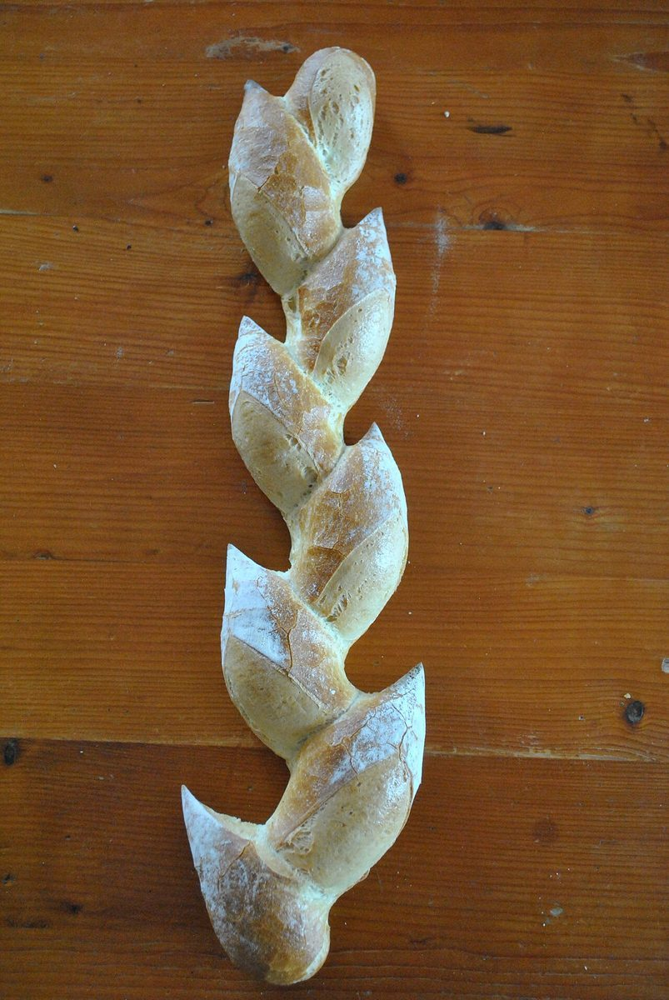

本体(モーター部)
土台になる箱。中にモーターが入り、容器を載せて回す力を出す部分。
店のこと
お店について確認できたのは所在地とInstagramだけです。ここでは、制作側が連想したフードプロセッサーの部位を順に紹介します。制作側の連想で、お店の理念・由来とは無関係です。


部位の解説
土台になる箱。中にモーターが入り、容器を載せて回す力を出す部分。
材料を入れる透明な容器。底の中央に軸を通す穴がある。
ボウルの軸に差す、二枚羽の金属の刃。回転して刻む部分。
ボウルに被せる蓋。回している間に中身が飛び出さないよう押さえる。
ふたに立ち上がる筒。回しながら材料を足すための投入口。
フィードチューブに差し込む棒。材料を刃の方へ押し込む。


お店について
屋号「カフェ・シ・テール」、所在地は〒914-0054 福井県敦賀市白銀町10-8、Instagramは @euterpe1925 です。それ以外の営業内容・提供内容は準備中のため、ここには書いていません。